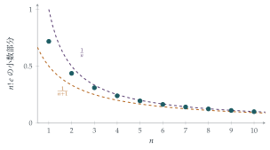

この節では2つの問題を扱う。1つ目は1997年の問題で、\(e\) が無理数（irrational）であることを証明する。2つ目は2024年の問題で、同じ考え方をより巧妙にした形を用いて \(e^2\) が無理数であることを証明する。こちらは本当に難しくなる。
STEP III 1997、第7問
先に進む前に問題を読んでおこう。問題は STEP Support Programme の問題データベースにある： step.maths.org/questions/97-s3-q7
STEP III 2024、第7問
先に進む前に問題を読んでおこう。問題は、OCRが配布している2024年のSTEP問題一式（zipファイル）のSTEP IIIに収録されている： www.ocr.org.uk/Images/725753-2024-past-papers.zip
導入
第 1.3 節 では、\(\sqrt2\) が単純な方程式 \(x^2 = 2\) を満たすという事実を用いて、\(\sqrt2\) が無理数であることを証明した。しかし \(e\) は、知られている限りそのような方程式を満たさない。手がかりは次の級数（series）だけである。 \[e = 1 + \frac{1}{1!} + \frac{1}{2!} + \frac{1}{3!} + \cdots.\] 級数から、ある数が分数でないことがどうしてわかるのだろうか。
その答えは、数論（number theory）で最も役に立つ考え方の1つである。すなわち、整数は \(0\) と \(1\) の間に（両端を除いて）存在しえない。ある量が整数であり、しかも \(0\) より大きく \(1\) より小さいことを示せれば、矛盾（contradiction）が得られる。この節の内容はすべて、この主題の変奏である。
取りかかる前に
\(e = p/q\) と仮定する。\(e\) に \(q\) を掛けると整数になる。では、\(q!\) を掛けると \(e\) の級数の各項はどうなるか。
\(k \leq q\) であれば、\(\dfrac{1}{k!}\) に \(q!\) を掛けると整数になる。したがって \(q!\,e\) は、整数の部分（最初の \(q+1\) 項）と「裾」（tail、それ以降のすべて）に分かれる。\(e = p/q\) ならば \(q!\,e\) 自身が整数なので、裾も整数でなければならない。方針は、裾が \(0\) と \(1\) の間に（両端を除いて）あることを示すことである。
順を追って解く
段階 1 ウォームアップ：\(e\) は無理数である
級数 \(b_n\) は初項と公比がともに \(\frac{1}{n+1}\) の等比級数（geometric series）であるから、 \[b_n = \frac{1/(n+1)}{1 - 1/(n+1)} = \frac{1}{n}.\]
\(a_n\) と \(b_n\) を項ごとに比べよ。どちらが大きいか。
初項は等しい。それ以降は \((n+1)(n+2) > (n+1)^2\) であり、一般に \(k \geq 2\) に対して \((n+1)(n+2)\cdots(n+k) > (n+1)^k\) が成り立つので、\(a_n\) の2項目以降の各項は \(b_n\) の対応する項より小さい。よって \(0 < a_n < b_n = 1/n\) である。
ここで \(a_n\) が実際には何であるかを見てみよう。\(e\) の級数に \(n!\) を掛けると \[n!\,e = \underbrace{\frac{n!}{0!} + \frac{n!}{1!} + \cdots + \frac{n!}{n!}}_{\text{整数}} + \underbrace{\frac{n!}{(n+1)!} + \frac{n!}{(n+2)!} + \cdots}_{=\,a_n}.\] \(0 < a_n < 1\) であるから、\(n!\,e\) の整数部分は最初のまとまりであり、\(a_n\) は小数部分（fractional part）である。すなわち \(a_n = n!\,e - [n!\,e]\) である。
では証明を完成させよう。\(e = p/q\) と仮定する。\(n\) をどの値に選べばよいか。
\(n = q\) とする。すると \(q!\,e = (q-1)!\,p\) は整数なので、その小数部分 \(a_q\) は \(0\) である。しかし \(a_q > 0\) である。これは矛盾であり、\(e\) は無理数である。■
この証明は、1815年ごろのフーリエ（Fourier）によるものである。
段階 2 \(e^2\) が難しい理由
同じ考え方を \(e^2\) に試してみよ。その級数は \(\sum 2^k/k!\) である。\(n!\) を掛けて裾を見ると、何がうまくいかないか。
今度は裾が \(\dfrac{2^{n+1}}{n+1} + \dfrac{2^{n+2}}{(n+1)(n+2)} + \cdots\) となり、\(2\) のべきがすべてを台無しにする。裾はもはや小さくないのである。\(n!\) を掛けても、分子の \(2^k\) には何の効果もない。
2024年の問題の工夫は、\(e^2\) をまったく扱わないようにすることである。\(e^2 = p/q\) ならば \[qe = \frac{p}{e}.\] こうすると2つの数 \(e\) と \(1/e\) が得られ、どちらも階乗（factorial）による級数をもち、厄介な \(2\) のべきを含まない。 \[e = \sum_{k=0}^{\infty} \frac{1}{k!}, \qquad \frac1e = \sum_{k=0}^{\infty} \frac{(-1)^k}{k!}.\]
段階 3 2つの裾
小問 (i) はウォームアップそのものであり、\(0 < f(n) < 1/n\) である。
小問 (ii) の \(g(n)\) は、項の大きさが減少していく交代級数（alternating series）である。
\(t_1 > t_2 > t_3 > \cdots > 0\) である交代級数 \(t_1 - t_2 + t_3 - \cdots\) について、和が \(0\) と \(t_1\) の間にあるのはなぜか。
項を2つずつ組にすると、\((t_1 - t_2) + (t_3 - t_4) + \cdots\) は正の括弧の和なので正である。組み方を変えると、\(t_1 - (t_2 - t_3) - (t_4 - t_5) - \cdots\) は \(t_1\) から正の括弧を引いたものなので \(t_1\) より小さい。ここでは \(t_1 = \frac{1}{n+1}\) であり、各項は前の項を \(1\) より大きい数で割ったものなので項は減少する。よって \(0 < g(n) < \frac{1}{n+1}\) である。
段階 4 再び整数
ウォームアップとまったく同様に、\(e\) に \((2n)!\) を掛けて裾を切り離すと \[(2n)!\,e = (\text{整数}) + f(2n).\] よって \((2n)!\,e - f(2n)\) は整数である。\(1/e\) についても同じことを行うと \[\frac{(2n)!}{e} = \sum_{k=0}^{2n} (-1)^k \frac{(2n)!}{k!} + \sum_{k=2n+1}^{\infty} (-1)^k \frac{(2n)!}{k!}.\]
裾の最初の項 \(k = 2n+1\) の符号は何か。裾は \(g(2n)\) とどのような関係にあるか。
裾の最初の項は \(k = 2n+1\) で奇数なので、負である。裾は \[-\frac{1}{2n+1} + \frac{1}{(2n+1)(2n+2)} - \cdots = -g(2n).\] よって \(\dfrac{(2n)!}{e} + g(2n)\) は整数である。■
問題で \(n\) ではなく \(2n\) を用いているのはこのためである。偶数の階乗を掛けると、\(1/e\) の裾は予測どおりの符号をもち、ちょうど \(-g\) になる。
段階 5 矛盾
\(qe = p/e\) と仮定する。両辺に \((2n)!\) を掛け、段階 4 を用いると \[q\bigl(\text{整数} + f(2n)\bigr) = p\bigl(\text{整数} - g(2n)\bigr).\] 整理すると、\(q f(2n) + p g(2n)\) は整数の組合せに等しいので整数である。これが小問 (iv) である。
では段階 3 で得た評価を使おう。\(n\) が非常に大きいとき、\(q f(2n) + p g(2n)\) はどうなるか。
\(f(2n)\) と \(g(2n)\) はどちらも正なので、\(q f(2n) + p g(2n) > 0\) である。また \[q f(2n) + p g(2n) < \frac{q}{2n} + \frac{p}{2n+1} < \frac{p+q}{2n}.\] \(n > (p+q)/2\) と選ぶ。すると \(q f(2n) + p g(2n)\) は \(0\) と \(1\) の間に（両端を除いて）ある整数となる。これはありえないので、\(e^2\) は無理数である。■

振り返り
原動力は「0 と 1 の間に（両端を除いて）整数は存在しない」ことである。 どちらの証明も、整数でなければならない量を作り、それを挟み込んでいる。
階乗は裾を小さくする。 \(n!\) を掛けることで級数の初めの部分が整数になり、\(1/n\) のように小さくなる裾が残った。
正面から攻めてうまくいかなければ、式を変形せよ。 \(e^2 = p/q\) に正面から取り組む代わりに、\(qe = p/e\) と書き直し、難しさを扱いやすい2つの数に分散させた。
細部が重要である。 \(n\) ではなく \(2n\) を選んだことで、裾の符号が定まった。多くの証明は、このような小さな細部にかかっている。
背後にある数学
リウヴィル（Liouville）は1840年に、\(e^2\) が無理数であること、さらには整数係数の二次方程式（quadratic equation）を満たさないことを証明した。1873年、エルミート（Hermite）ははるかに先へ進み、\(e\) が超越数（transcendental）であること、すなわち整数係数のいかなる多項式（polynomial）の根でもないことを証明した。その証明は、まさに上の議論を高度にしたものである。つまり、整数を作り、それが \(0\) と \(1\) の間に（両端を除いて）あることを示すのである。その9年後、リンデマン（Lindemann）はエルミートの方法を応用して \(\pi\) が超越数であることを示し、定規とコンパスによる「円積問題」という古代からの問題が不可能であることをついに証明した。
まだわかっていないこと
これらの方法がこれほど強力であるにもかかわらず、きまりが悪いほど単純な問題が未解決のまま残っている。\(e + \pi\) は無理数か。\(e\pi\) はどうか。誰も知らない。ただし、少なくとも一方は超越数でなければならない（演習 4）。\(\zeta(3) = 1 + \frac{1}{8} + \frac{1}{27} + \cdots\) は無理数か。答えは「はい」である。アペリー（Apéry）が1978年にこれを証明し、数学界を驚かせた。\(\zeta(5)\) はどうか。誰も知らない。
近似
これらの証明の背後には、より深い考え方がある。それは、ある数が分数によってあまりにもよく近似できるならば、その数は無理数である、というものである。\(e\) の級数の部分和（partial sums）は、非常に速く \(e\) に非常に近づく分数である。分数は、他の分数によってそれほどよく近似されることはありえない。これがディオファントス近似（Diophantine approximation）の出発点であり、数論のこの分野については 第 2.9 節 でさらに探究できる。そこでは別の種類の積分から、\(e\) にさらに迫るよりよい分数が得られる。
思考のスキル
ある数が無理数であることを証明するには、それが分数であると仮定し、そこから整数でなければならない量を作り、その量が \(0\) と \(1\) の間に（両端を除いて）あることを示せ。
腕の見せどころは、その量の選び方にある。ここでは階乗を掛けることで級数の大部分が整数になり、小さいが正である裾が残った。
次の一歩
\(1/e\) だけを用いる。 \(1/e = p/q\) と仮定し、\(1/e\) の交代級数だけを用いて、\(e\) が無理数であることを証明せよ。
\(\sin 1\) は無理数である。 \(\sin 1 = 1 - \dfrac{1}{3!} + \dfrac{1}{5!} - \cdots\) を用いて、\(\sin 1\) が無理数であることを証明せよ。（適当な奇数の階乗を掛けよ。）
なぜ \(\pi\) ではうまくいかないのか。 この方法が \(\pi\) に直接は使えない理由を説明せよ。次に、級数の代わりに積分を用いて \(\pi\) が無理数であることを示した、ニーヴン（Niven）による1ページの証明（1947年）を調べよ。これは優秀な A レベル（A level、英国の大学入学資格試験）の生徒の手の届く範囲にある。
どちらか一方は超越数である。 発展 \(e\) と \(\pi\) が \(x^2 - (e+\pi)x + e\pi = 0\) の根であることを示せ。係数が代数的数（algebraic number）である多項式の根はそれ自身代数的であること、および \(\pi\) が代数的でないこと（リンデマン）は仮定してよい。\(e + \pi\) と \(e\pi\) の少なくとも一方が超越数であることを導け。
さらに学ぶために
Aigner & Ziegler, Proofs from THE BOOK（『天書の証明』）、第 8 章「Some irrational numbers」（いくつかの無理数）。まさにこれらの考え方を用いて、\(e\)、\(e^2\)、\(e^4\)、\(\pi^2\) が無理数であることを証明している。
Ivan Niven, Irrational Numbers（Mathematical Association of America）。\(\sqrt2\) から超越性までを扱う、短い古典的名著である。
Julian Havil, The Irrationals（Princeton University Press）。無理数の歴史を読みやすく描いた本である。